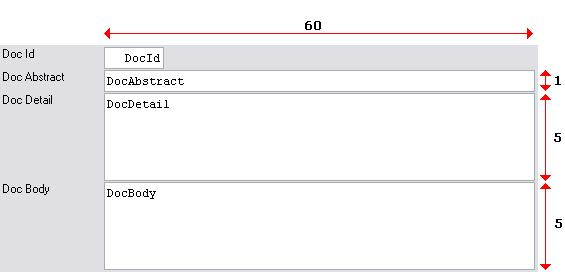
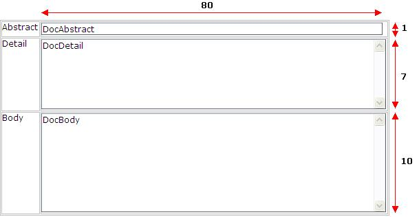
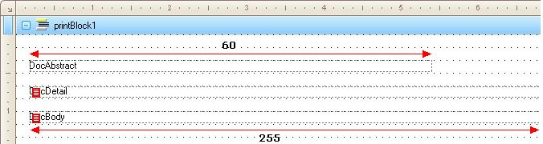

The default control size for long character controls have changed, in order to improve the default form generation.
With the objective of improving the default form generation of large characters controls such as Character, Varchar and Longvarchar; a new heuristic has been defined to set the control size when inserting them on Forms.
Big size character attributes (such as Character, Varchar and Longvarchar) are usually edited in Forms using control sizes much smaller than it's maximum size.
When designing a Form, the developer will create a standard control to edit\show the content of the attribute or variable depending on their needs. Generally, the developer defines a standard control size and uses Vertical and/or Horizontal Scroll in order to show the whole attribute content.
Regarding to the default form generation, the Attribute size defines a control's default size which willl be taken into account when generating the layout. The default control sizes are applied using the following parameters:
- MaximumEditLength: Maximum size in characters for the control to be defined as a Single Edit; defined the control maximum width. If this value is surpasses; the control automatically will enable horizontal scroll (runtime).
- MaximumSingleLineEditLength: Maximum size in characters for a control to be used with horizontal scroll. If this value is surpasses; the control automatically will be generated as multi-line, with Vertical Scroll. Once the control is Multiline, the quantity of lines that it will have, will depend on the attribute size, and is calculated as:
INT (attribute_size / MaximumEditControlLength) 1
To restrict this number a maximum is established by the property MaximumMultiLineControlLines.
- MaximumMultiLineControlLines: Maximum quantity of lines for a multiline control; defined the control maximum height.
The following picture resumes the three thresholds used to define a default character control size:

This means that any default control on a Form will have a maximum of MaximumEditLength X MaximumMultiLineControlLines characters.The user is able to modify the control size through the Autoresize property, but then it will loose the dynamism associated to the attribute\variable size.
Taking into account that Windows and Web Forms have nothing in common, these values have been specialized to generate a default form as good as possible in:
- Win environments
- Web environments
- Reports
Attributes and variables with the Autoresize property enabled will be designed with the following thresholds values:
| Property |
Value |
Detail |
| WinMaximumEditLength |
60 |
Win value associated to the MaximumEditLength property |
| WinMaximumSingleLineEditLength |
119 |
Win value associated to the MaximumSingleLineEditLength property |
| WinMaximumMultiLineEditLines |
5 |
Win value associated to the MaximumMultiLineEditLines property |
Default Win control sizes will have a maximum of 60 character width, and 5 lines height.
Attributes and variables with the Autoresize property enabled will be designed with the following thresholds values:
| Property |
Value |
Detail |
| WebMaximumEditLength |
80 |
Web value associated to the MaximumEditLength property |
| WebMaximumSingleLineEditLength |
159 |
Web value associated to the MaximumSingleLineEditLength property |
| WebMaximumMultiLineEditLines |
10 |
Web value associated to the MaximumMultiLineEditLines property |
Default Web control sizes will have a maximum of 80 character width, and 10 lines height.
Report
Reports take into accout the following values:
| Property |
Value |
Detail |
| ReportMaximumEditLength |
255 |
Report value associated to the MaximumEditLength property |
| ReportMaximumMultiLineEditLines |
1 |
Report value associated to the MaximumMultiLineEditLines property |
Default Report control sizes will have a maximum of 255 character width, and only one line height.
Note: the MaximumSingleLineEditLength does not apply in Reports.
Suppose we have the following attributes:
| Attribute |
Data type |
Comment |
| DocAbstract |
Character(100) |
Abstract of the document |
| DocDetail |
VarChar(500) |
Detailed information |
| DocBody |
LongVarChar(10Kb) |
Extended documentation |
The default controls of the Windows form will be designed as follows:
| Attribute |
Control size |
Comment |
| DocAbstract |
60 characters x 1 line |
Attribute size (100) lower than WinMaximumSingleLineEditLength; lower than WinMaximumSingleLineEditLength; 1 line generated. |
| DocDetail |
60 characters x 5 lines |
Attribute size (500) greater than WinMaximumSingleLineEditLength; greater than WinMaximumSingleLineEditLength; generate as much lines as possible lower than the maximum WinMaximumMultiLineEditLines value (5); 5 lines generated. |
| DocBody |
60 characters x 5 lines |
Equal previous attribute. |

For Web environment, the default controls will be designed as follows:
| Attribute |
Control size |
Comment |
| DocAbstract |
80 characters x 1 line |
Attribute size (100) lower than WebMaximumSingleLineEditLength; lower than WebMaximumSingleLineEditLength; 1 line generated. |
| DocDetail |
80 characters x 7 lines |
Attribute size (500) greater than WebMaximumSingleLineEditLength; greater than WebMaximumSingleLineEditLength; generate as much lines as possible lower than the maximum WebMaximumMultiLineEditLines value (10); 7 lines generated. |
| DocBody |
80 characters x 10 lines |
Equal previous attribute; 10 lines generated. |

Reports will generate the default controls as follows:
| Attribute |
Control size |
Comment |
| DocAbstract |
100 characters x 1 line |
Attribute size (100) lower than ReportMaximumEditLength. |
| DocDetail |
255 characters x 1 line |
Attribute size greater than ReportMaximumEditLength. |
| DocBody |
255 characters x 1 line |
Equal previous attribute. |

Languages: All
Objects: Attributes, Variables, Domains
|